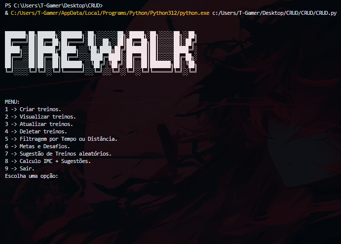
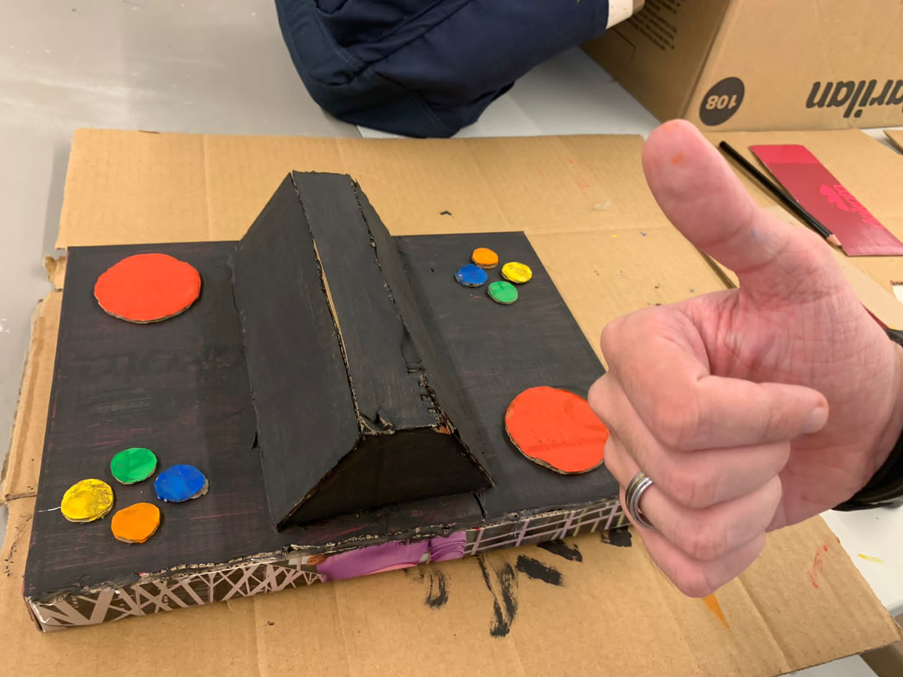

CRUD
Projeto CRUD, esse foi um projeto CRUD em Python, que desenvolvi com mais 3 amigos, foi um projeto para a disciplina Fundamentos da Programação, a disciplina de Introdução a Computação foi de grande ajuda no desenvolvimento do projeto, pois nela aprendemos a usar melhor o GitHub para trabalharmos em equipe.
Ver mais

Protótipo Projeto
Esse é o protótipo de um projeto que eu e meu grupo da disciplina de Projetos estamos desenvolvendo. Nosso projeto é um jogo quizz que busca desenvolver e aumentar o interesse das pessoas pela cultura local, no nosso caso, mais especificamente sobre Recife-PE e o bairro do Recife Antigo. .
Ver mais